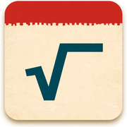

日めくり数学
毎日の一問 ― 古典パズル／高校入試／大学入試
📖 これは無料サンプル版です
2026年11月分の最初の5日分（全15問）をお試しいただけます。手書き解答スペースや教科書表記などの機能は、完全版とまったく同じです。
完全版（11月・12月分 全183問）は note で販売中です。翌月分は月ごとの追加パックで買い足せます。
日付を押すと、その日の問題が開きます。マスの下の印は取り組み状況（◎ 正解／△ 一部／× 不正解）です。
🔒 の日は完全版の問題です。サンプル版では 1日〜5日 の問題をお試しいただけます。
✏️ 解答スペース（指やペンで手書きできます。端まで書くと自動で広がります。点々の帯は、触って動かすための場所です）
スペースはここまでです（いちばん下まで広げました）。
添削ポイント
自己採点（タップで記録されます）
問題は毎月分をまとめて収録しています。手書きの解答・採点の記録はこの端末の中に保存されます。